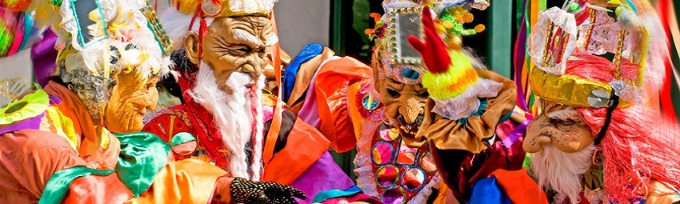

¡Lee atentamente y responde las preguntas marcando "V" verdadero o "F" Falso!
CULTURA PANAMEÑA

El festival de la pollera
Es una celebración que se lleva a cabo todos los años cada 22 de julio,
en la ciudad de Las Tablas durante la festividad de la Virgen Librada,
y se realiza en conmemoración a uno de los trajes típicos femeninos
más importantes del país, la pollera.
La festividad transcurre entre desfiles y música. Se realiza un concurso
para elegir al mejor atuendo y cerca de 15000 mujeres participan
luciendo sus características polleras.
El traje típico consiste en un vestido de
dos piezas conformadas por una prenda
llamada pollerón en la parte superior, y por
la falda en la parte inferior. En la cabeza
lleva un adorno llamado “tembleque” y en
los pies zapatos de raso.
Carnaval panameño
El carnaval tiene lugar entre los meses de
febrero y marzo, tiene una duración de cinco
días de celebraciones previas al Miércoles
de Ceniza. Durante el carnaval se realizan
múltiples actividades festivas en las calles de
Panamá. Música, máscaras, desfiles y danzas
son parte de los elementos festivos.
A partir del primer día del evento, se suele
realizar la elección de la reina del carnaval y su
corte. Posteriormente comienzan las caravanas.
Muchos exhiben trajes coloridos. También se
organizan eventos musicales y se acostumbra
empapar a la multitud con agua al encontrarse
en las calles. La celebración puede durar hasta
el amanecer del Miércoles de Ceniza, que
implica el final de la celebración y el comienzo
del período de cuaresma.
El carnaval en Panamá se celebra en los meses de diciembre y enero..
Durante el carnaval, se elige a la reina del carnaval el primer día del evento.
La celebración del carnaval en Panamá incluye música, máscaras, desfiles y danzas.
La festividad de la Virgen Librada se lleva a cabo en la ciudad de Las Tablas el 22 de junio.
Durante la festividad de la Virgen Librada, se elige al mejor atuendo de pollera, y participan cerca de 15000 mujeres.